Generated: 2026-09-08 03:36:40 UTC
This report documents how AmeriFlux ET and hydroclimatic-driver series were transformed at five temporal scales and quantifies exact simultaneous observations for later transfer-entropy analysis. No transfer entropy is calculated here.
The workflow starts from the original project's QC-filtered hourly site files. That earlier stage averaged available AmeriFlux channels for a variable after its fine-resolution QC filter and aggregated half-hourly records to UTC hours. No value is interpolated here. A complete UTC hourly grid is inserted so that a difference is never calculated across a missing timestamp.
ET. Latent heat flux is converted to an equivalent daily ET rate:
Negative calculated ET is set to zero, following the reference project. Aggregated files retain the mean ET rate and report an interval total equal to mean rate multiplied by interval duration.
Soil water potential. Soil-water-content percentage is converted to volumetric fraction and combined with site porosity, air-entry potential, and pore-size parameter:
The saved value is positive suction magnitude in kPa (numerically J kg-1). The future TE input is log10_psi_soil, because the untransformed magnitude is strongly right-skewed. VPD, air temperature, and net radiation retain hPa, degrees C, and W m-2.
| Scale | Bin | Minimum.hourly.coverage | Analysis.series |
|---|---|---|---|
| Hourly | Existing UTC hourly grid | Source hourly value | One-hour first difference minus centered 5-day same-hour mean difference |
| 6-hourly | 00:00, 06:00, 12:00, 18:00 UTC | 5 of 6 hours | Difference between adjacent 6-hour means minus centered 5-day same-slot mean difference |
| Daily | UTC calendar day | 18 of 24 hours | Residual from 3-harmonic cyclic day-of-year model |
| Weekly | Monday-starting ISO week | 126 of 168 hours | Residual from 2-harmonic cyclic ISO-week model |
| Monthly | UTC calendar month | 75% of actual month hours | Residual from 2-harmonic cyclic month-of-year model |
Hourly. For level series x at hour t, delta xt = xt - xt-1. The analysis value subtracts the mean delta x at that clock hour over offsets -2, -1, 0, +1, and +2 days. Available values are used in the local mean; output remains NA when the current difference is NA. This removes the locally repeating diurnal change while retaining departures from it.
6-hourly. Hourly levels are averaged within four fixed UTC bins per day. A variable is valid only with at least five of six hourly values. Differences are between adjacent 6-hour bins. The same-slot adjustment compares, for example, a 06:00 bin only with 06:00 bins over the centered five-day window.
Daily. Hourly levels are averaged when at least 18 of 24 values exist. For each variable separately, the seasonal expectation is fitted as an intercept plus three sine-cosine pairs using day of year and a 365.25-day period. Analysis value equals observed daily mean minus fitted seasonal expectation.
Weekly. Monday-starting weeks require at least 126 of 168 hourly values. The anomaly is the residual from two sine-cosine pairs using ISO week and a 52.1775-week period.
Monthly. Calendar months require 75% of their actual possible hours. The anomaly is the residual from two sine-cosine pairs using month and a 12-month period. At least 18 valid monthly values are required to fit an anomaly model.
A site-scale pair is counted only where ET and the named driver are both finite on the same processed timestamp. The site-level table records simultaneous n, first and last simultaneous dates, completeness within that span, number of valid segments, and longest uninterrupted run. Merely having overlapping calendar ranges is therefore not treated as sufficient.
Thresholds of 30, 100, 300, and 1,000 observations are descriptive—not automatic declarations that TE is valid. The eventual minimum depends on lag length, estimator settings, shuffle procedure, and sensitivity tests.
Download exact site-level overlap table | Download cross-site summary
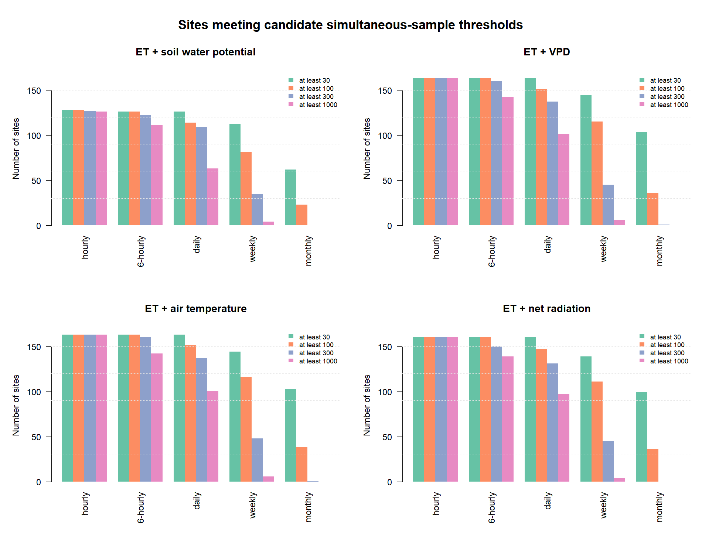
| Scale | Variable set | Sites with overlap | Median n | Q25 n | Q75 n | Sites n >= 30 | Sites n >= 100 | Sites n >= 300 | Sites n >= 1000 | Median longest run |
|---|---|---|---|---|---|---|---|---|---|---|
| hourly | ET + soil water potential | 128 | 17027 | 1950.5 | 44600.5 | 128 | 128 | 127 | 126 | 2300 |
| 6_hourly | ET + soil water potential | 128 | 2785 | 279.0 | 7239.0 | 126 | 126 | 122 | 111 | 538 |
| daily | ET + soil water potential | 126 | 706 | 77.0 | 1854.0 | 126 | 114 | 109 | 63 | 226 |
| weekly | ET + soil water potential | 114 | 99 | 0.0 | 255.5 | 112 | 81 | 35 | 4 | 44 |
| monthly | ET + soil water potential | 100 | 23 | 0.0 | 57.5 | 62 | 23 | 0 | 0 | 12 |
| hourly | ET + VPD | 163 | 33699 | 14626.0 | 60553.5 | 163 | 163 | 163 | 163 | 3249 |
| 6_hourly | ET + VPD | 163 | 5524 | 2384.5 | 9812.0 | 163 | 163 | 160 | 142 | 757 |
| daily | ET + VPD | 163 | 1396 | 605.5 | 2527.0 | 163 | 151 | 137 | 101 | 299 |
| weekly | ET + VPD | 150 | 199 | 84.5 | 361.5 | 144 | 115 | 45 | 6 | 67 |
| monthly | ET + VPD | 124 | 44 | 18.5 | 84.0 | 103 | 36 | 1 | 0 | 20 |
| hourly | ET + air temperature | 163 | 33987 | 14626.0 | 62353.5 | 163 | 163 | 163 | 163 | 3259 |
| 6_hourly | ET + air temperature | 163 | 5580 | 2384.5 | 10302.0 | 163 | 163 | 160 | 142 | 777 |
| daily | ET + air temperature | 163 | 1416 | 605.5 | 2614.5 | 163 | 151 | 137 | 101 | 308 |
| weekly | ET + air temperature | 150 | 200 | 84.5 | 376.5 | 144 | 116 | 48 | 6 | 68 |
| monthly | ET + air temperature | 124 | 46 | 18.5 | 86.5 | 103 | 38 | 1 | 0 | 20 |
| hourly | ET + net radiation | 160 | 28801 | 13589.0 | 60183.0 | 160 | 160 | 160 | 160 | 2524 |
| 6_hourly | ET + net radiation | 160 | 4698 | 2163.5 | 9957.5 | 160 | 160 | 150 | 139 | 654 |
| daily | ET + net radiation | 160 | 1198 | 550.5 | 2511.5 | 160 | 147 | 131 | 97 | 249 |
| weekly | ET + net radiation | 145 | 171 | 75.0 | 358.5 | 139 | 111 | 45 | 4 | 55 |
| monthly | ET + net radiation | 120 | 36 | 0.0 | 83.0 | 99 | 36 | 0 | 0 | 19 |
In these histograms, each histogram observation is one AmeriFlux site. The x-axis is the log10 simultaneous processed timestamps for the stated ET-driver pair; the y-axis is the number of sites. These are sample-size distributions, not environmental-value distributions.
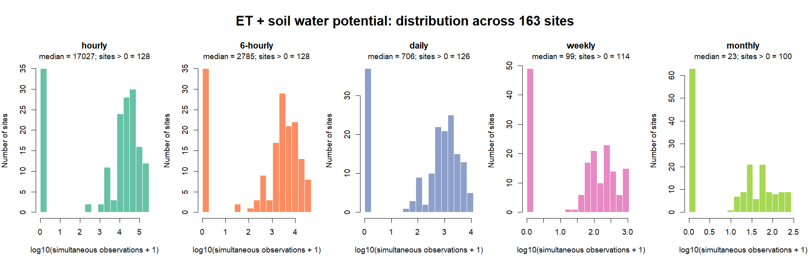
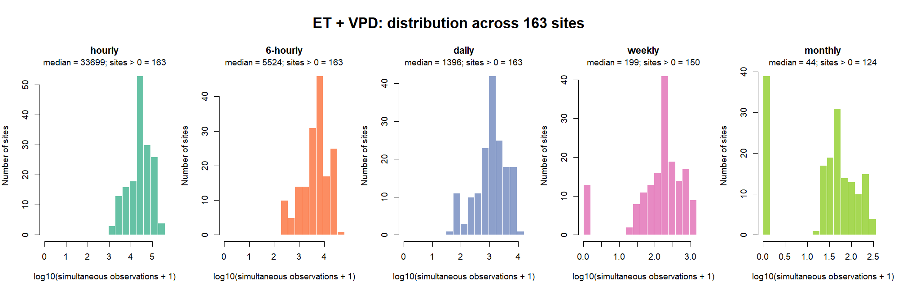
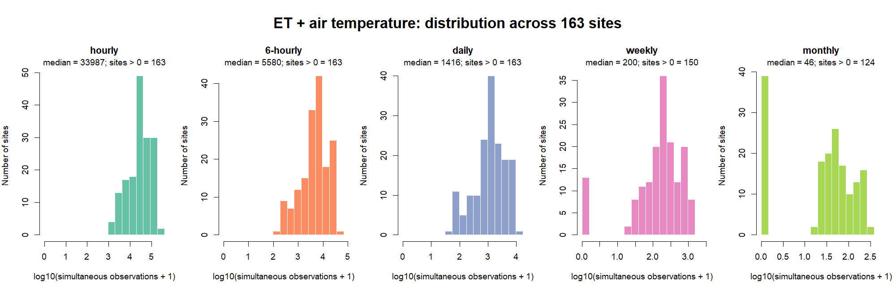
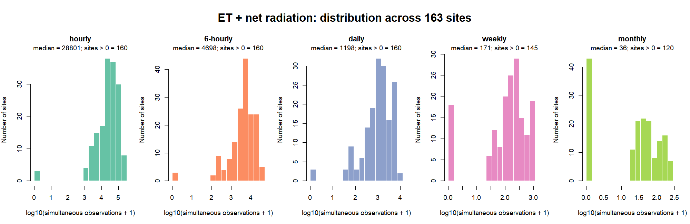
Each cell is the cross-site median of simultaneous observations divided by expected time steps between the first and last simultaneous observation. Dark text is used for visibility. A high value means few internal gaps; it does not imply a long record.
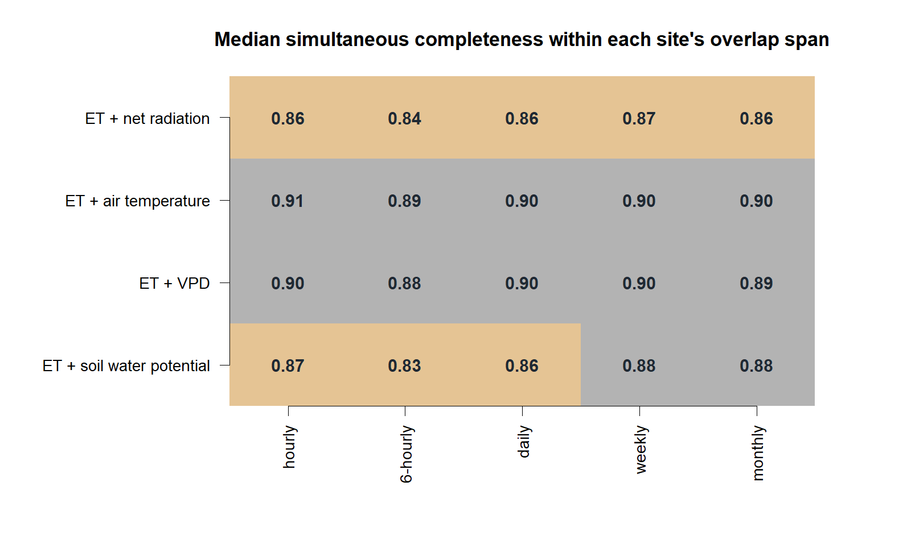
The map colors sites by monthly simultaneous observations for ET plus core drivers (soil water potential, VPD, and air temperature). US-Fuf is marked and labeled. Among CONUS sites having ET and all four drivers—including net radiation—at every scale, it has the smallest Euclidean distance from the cross-site median log10 sample-size profile across scales. It is a median-data-availability example, not a claim that its climate or ecosystem represents all sites.
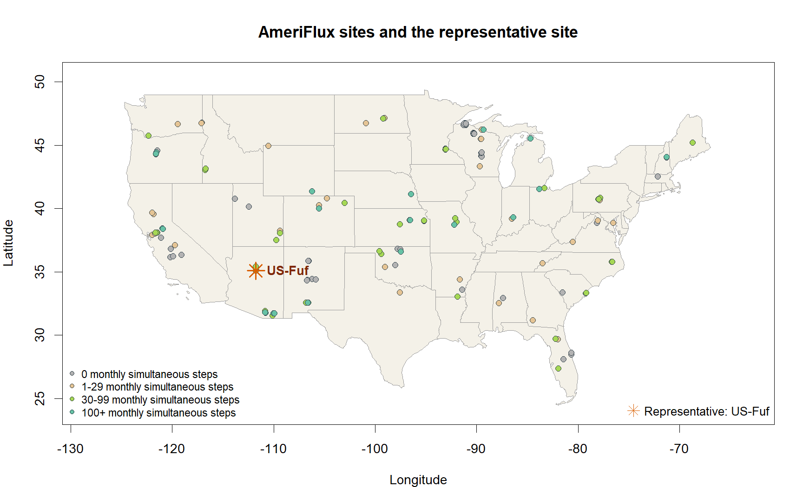
| Scale | Variable set | Simultaneous n | First simultaneous | Last simultaneous | Fraction within span | Longest run |
|---|---|---|---|---|---|---|
| hourly | ET + soil water potential | 40969 | 2005-09-08 | 2010-12-23 | 0.88 | 5281 |
| 6_hourly | ET + soil water potential | 6730 | 2005-09-09 | 2010-12-23 | 0.87 | 1094 |
| daily | ET + soil water potential | 1696 | 2005-09-10 | 2010-12-22 | 0.88 | 325 |
| weekly | ET + soil water potential | 239 | 2005-09-12 | 2010-12-13 | 0.87 | 55 |
| monthly | ET + soil water potential | 53 | 2005-11-01 | 2010-11-01 | 0.87 | 18 |
| hourly | ET + VPD | 39631 | 2005-09-08 | 2010-10-19 | 0.88 | 4993 |
| 6_hourly | ET + VPD | 6517 | 2005-09-09 | 2010-10-13 | 0.88 | 831 |
| daily | ET + VPD | 1650 | 2005-09-09 | 2010-10-12 | 0.89 | 266 |
| weekly | ET + VPD | 233 | 2005-09-12 | 2010-10-04 | 0.88 | 61 |
| monthly | ET + VPD | 52 | 2005-10-01 | 2010-09-01 | 0.87 | 20 |
| hourly | ET + air temperature | 42080 | 2005-09-06 | 2010-12-23 | 0.91 | 5281 |
| 6_hourly | ET + air temperature | 6919 | 2005-09-07 | 2010-12-23 | 0.89 | 1094 |
| daily | ET + air temperature | 1749 | 2005-09-07 | 2010-12-22 | 0.90 | 274 |
| weekly | ET + air temperature | 247 | 2005-09-05 | 2010-12-13 | 0.89 | 61 |
| monthly | ET + air temperature | 57 | 2005-09-01 | 2010-11-01 | 0.90 | 20 |
| hourly | ET + net radiation | 40511 | 2005-09-06 | 2010-12-23 | 0.87 | 3647 |
| 6_hourly | ET + net radiation | 6664 | 2005-09-07 | 2010-12-23 | 0.86 | 822 |
| daily | ET + net radiation | 1677 | 2005-09-07 | 2010-12-22 | 0.87 | 273 |
| weekly | ET + net radiation | 239 | 2005-09-05 | 2010-12-13 | 0.87 | 39 |
| monthly | ET + net radiation | 54 | 2005-09-01 | 2010-11-01 | 0.86 | 20 |
Each figure shows one analyzed variable at all five scales. Zero is the no-change/no-anomaly reference. Dense hourly lines are expected because the full record is shown.
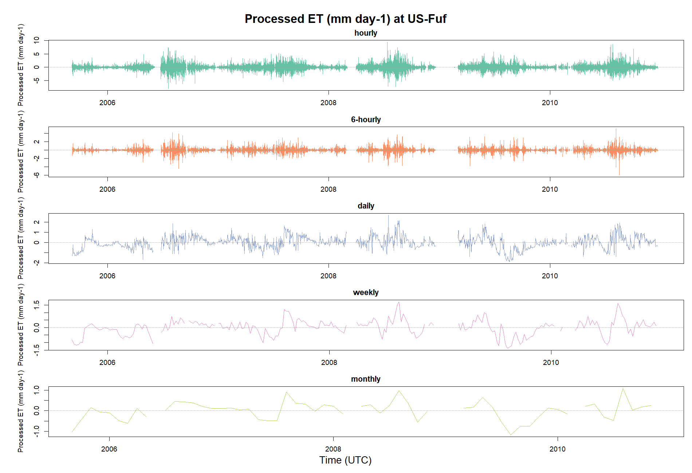
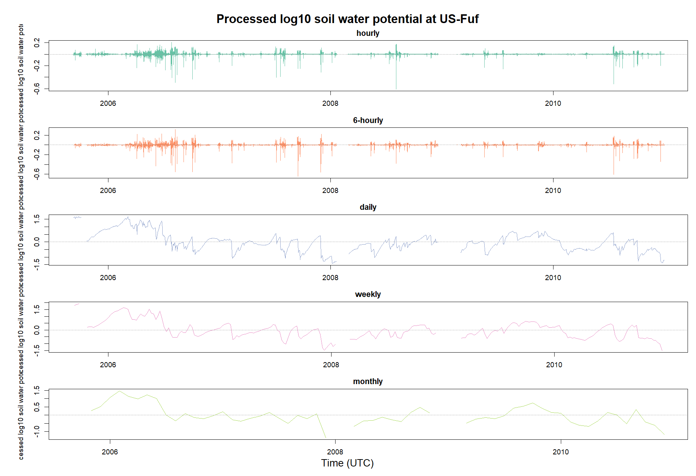
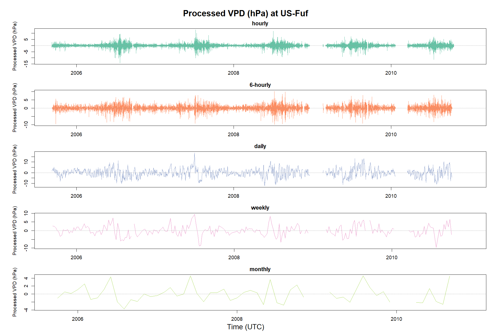
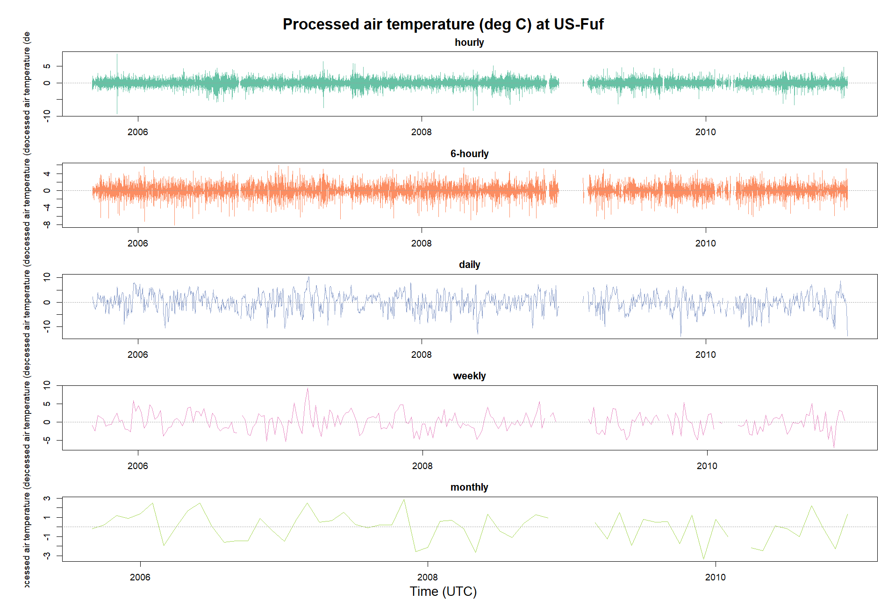
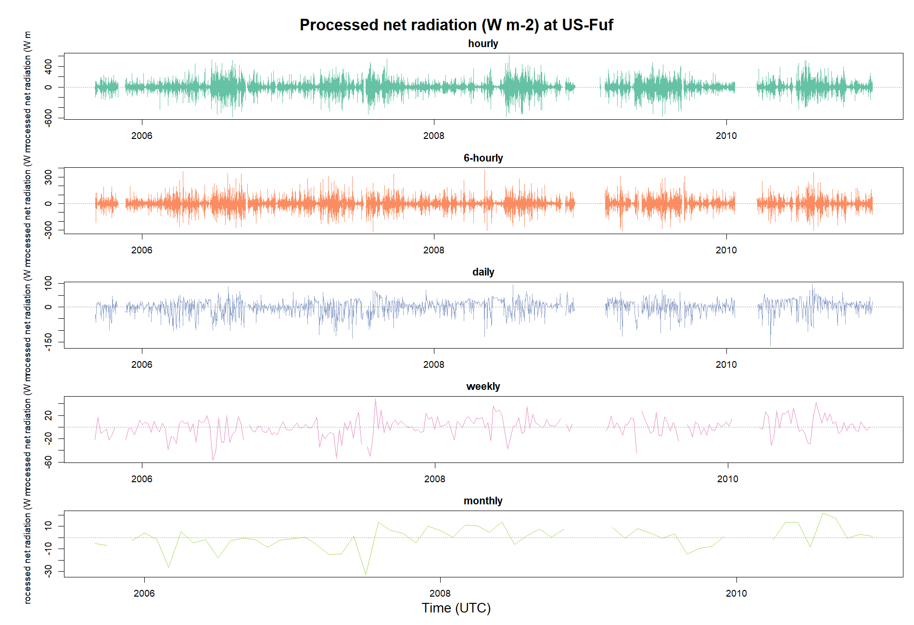
These differ from the site sample-size distributions. Here, each observation is one processed timestamp at US-Fuf. The y-axis is time steps per value bin. To stop rare extremes from flattening subdaily panels, 40 bins and the central 99% are displayed; total finite n is printed above each panel.
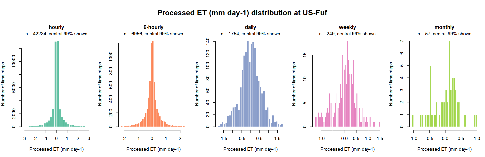
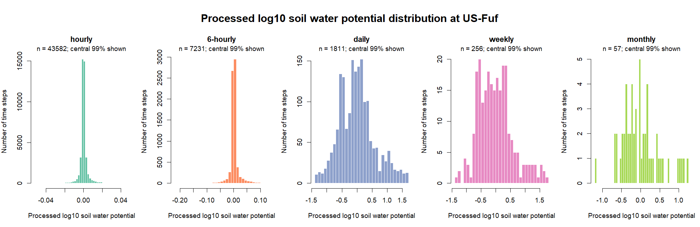
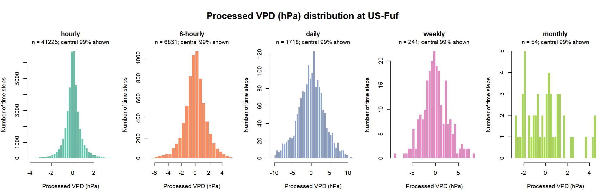
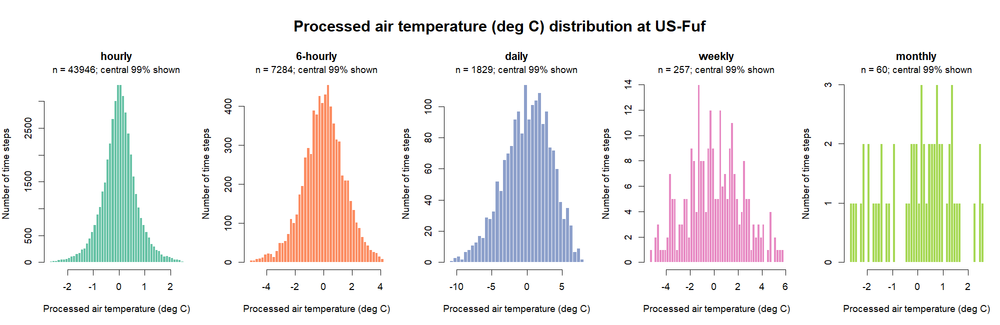
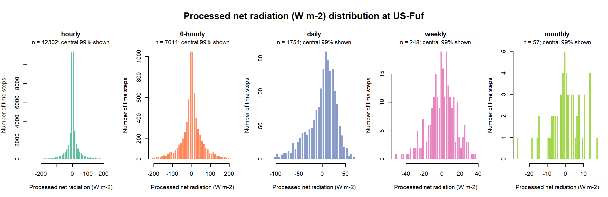
No records.